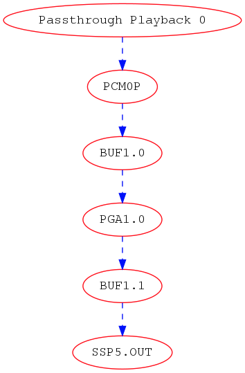
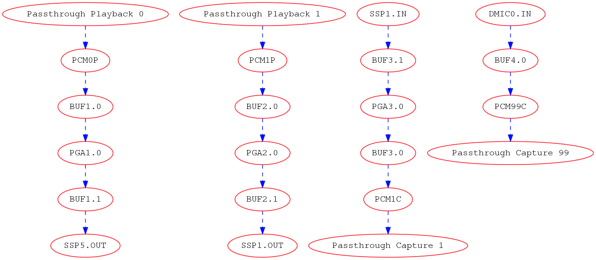

SOF Topology#
Topology defines the audio processing pipeline that is used by the firmware. In SOF, topologies are defined using M4 macro language, which is making the conversion to text based ALSA topology file (based on alsaconf syntax). This topology file is further processed with alsatplg to binary, that can be sent to firmware.
More details about ALSA topology here.
1. Topology Ingredients#
Topology typically contains the following items:
Widgets
Tokens
Kcontrols
Pipelines
Backend DAI’s
DAI link configurations
The following sections will describe how to define these with M4.
1.1 Widgets#
Widgets define the individual audio processing components that make up the pipeline. Examples of widgets are volume, sample rate converter, tone generator, host, dai, buffers etc. Widgets are defined using macros that expand to include the respective sections containing details such as pipeline information, type of widget and widget specific data. Widget specific data includes information needed for configuring the widget during initialization. These are defined using vendor tuples that can be of type string, word or short.
1.2 Tokens/Vendor Tuples#
Tokens or vendor tuples allow us to add widget specific or platform specific data. Widgets can have tokens that are common across all widget types along with bespoke tokens required to configure the particular widget type. For example, in the case of the volume component, configuration data can include the volume step type and volume ramp step in milliseconds which are specific to the pga type widget. These are predefined in the sof_volume_tokens array in tokens.m4 file as follows:
SectionVendorTokens."sof_volume_tokens" {
SOF_TKN_VOLUME_RAMP_STEP_TYPE "250"
SOF_TKN_VOLUME_RAMP_STEP_MS "251"
}
Example pga widget macro:
W_PGA(name, format, periods_sink, periods_source, preload, kcontrol0. kcontrol1...etc)
This macro takes the following arguments:
The W_PGA macro expands to include the following sections:
SectionWidget: This includes the pipeline information, type of widget, data section and the mixers associated with the widget. SectionData: This includes the configuration data for the widget. Note that there are 2 data sections. The first one is for including the common widget tokens such as sink period count, source period count and preload count which are “word” tokens. The second one is for including the audio format for the component which is of type “string”. Note that tokens are different types need to be specified in different sections even though they belong to the same sof_comp_tokens array definition. SectionVendorTuples: This section includes the tokens and their respective values. Mixer: The mixer section includes the list of kcontrols associated with the widget. Kcontrols are defined using the macros depending on type. More details can be found in the Kcontrols section.
define(`W_PGA',
`SectionVendorTuples."'N_PGA($1)`_tuples_w" {'
` tokens "sof_comp_tokens"'
` tuples."word" {'
` SOF_TKN_COMP_PERIOD_SINK_COUNT' STR($3)
` SOF_TKN_COMP_PERIOD_SOURCE_COUNT' STR($4)
` SOF_TKN_COMP_PRELOAD_COUNT' STR($5)
` }'
`}'
`SectionData."'N_PGA($1)`_data_w" {'
` tuples "'N_PGA($1)`_tuples_w"'
`}'
`SectionVendorTuples."'N_PGA($1)`_tuples_str" {'
` tokens "sof_comp_tokens"'
` tuples."string" {'
` SOF_TKN_COMP_FORMAT' STR($2)
` }'
`}'
`SectionData."'N_PGA($1)`_data_str" {'
` tuples "'N_PGA($1)`_tuples_str"'
`}'
`SectionWidget."'N_PGA($1)`" {'
` index "'PIPELINE_ID`"'
` type "pga"'
` no_pm "true"'
` data ['
` "'N_PGA($1)`_data_w"'
` "'N_PGA($1)`_data_str"'
` ]'
` mixer ['
$6
` ]'
`}')
Other widget macros can be found in their respective macro files in the topology/m4 folder in the SOFT repo.
1.3 Kcontrols#
These are kernel controls that are associated with widgets and are exposed to the userspace. Examples of kcontrols are volume controls, mute switches etc. These are defined using macros that include information such as pipeline id, IO handlers and other control specific information such as tlv data for volume controls. At the moment, we only have predefined macro for mixer type controls. Enum/byte type controls will be added in the future.
Example kcontrol macro for mixer type controls:
C_CONTROLMIXER(name, index, ops, max, invert, tlv, KCONTROL_CHANNELS)
The arguments for the macro are as follows:
1.4 Pipelines#
Pipeline definitions contain the following:
Widget descriptions: These are the details of the widgets that make up the pipeline
Kcontrol descriptions: These are the kcontrols that are associated the widgets in the pipeline
Pipeline graph: These specify the connection between the widgets in the pipeline
PCM Capabilities: These contain the details about the pcm capabilities in terms of the formats, sample rates, channels etc supported by the pipeline. The macro is defined as below:
PCM_CAPABILITIES(name, formats, rate_min, rate_max, channels_min, channels_max, periods_min, periods_max, period_size_min, period_size_max, buffer_size_min, buffer_size_max)
Consider the following example of a audio playback pipeline (as described in pipe-volume-plalyback.m4)
host PCM_P --> B0 --> Volume 0 --> B1 --> sink DAI0
The pipeline description includes the following:
Widgets: 4 widgets corresponding to the Host, volume and 2 instances of buffers
Kcontrols: 1 mixer type kcontrol that is associated with the volume component
Pipeline graph: Showing the connections between the widgets as shown above
PCM Capabilities: The capabilities supported by the audio playback pipeline as below:
The DAI component in the pipeline is defined using a separate pipeline corresponding to whether it is a capture or a playback pipeline. Please see the next section for more details.
1.5 Backend DAI#
This section describes the BE (BackEnd) DAI’s for playback/capture pipelines. The BE DAI’s are defined as a separate pipeline consisting of the DAI widget and the pipeline graph section containing the connection between the BE DAI and the pipeline buffer. For example let’s consider the case of playback pipeline shown in the previous section. The pipeline graph section would contain the connection between the BE DAI and Buffer B1. Backend DAI’s are added using the DAI_ADD macro defined as follows:
DAI_ADD(pipeline, pipe id, dai type, dai_index, dai_be, buffer,
periods, format, frames, deadline, priority, core)
1.6 Backend DAI link Config#
This section describes the configuration details for the BE DAI links in the audio pipeline. The BE DAI configuration is defined using the following macro:
DAI_CONFIG(type, dai_index, link_id, name, config)
where:
The configuration parameters for SSP’s are defined using the following macro:
SSP_CONFIG(format, mclk, bclk, fsync, tdm, ssp_config_data)
where:
The configuration parameters for DMIC’s are defined using the following macro:
DMIC_CONFIG(driver_version, clk_min, clk_max, duty_min, duty_max,
sample_rate, fifo word length, type, dai_index, pdm controller
config)
where:
1.7 DSP Core Index#
The topology file can specify on which DSP core a pipeline or component will be scheduled.
To specify the DSP core for a pipeline, use the SOF_TKN_SCHED_CORE token located in tools/topology/m4/pipeline.m4:
W_PIPELINE(stream, period, priority, core, initiator, platform)
...
` SOF_TKN_SCHED_CORE' STR($4)
...
Then specify this ‘core’ in your pipeline definition, such as in tools/topology/sof/pipe-dai-playback.m4:
W_PIPELINE(N_DAI_OUT, SCHEDULE_PERIOD, SCHEDULE_PRIORITY, SCHEDULE_CORE, SCHEDULE_TIME_DOMAIN, pipe_dai_schedule_plat)
To specify the DSP core for a component/widget, use the SOF_TKN_COMP_CORE_ID token located in tools/topology/m4/pga.m4:
dnl W_PGA(name, format, periods_sink, periods_source, core, kcontrol0. kcontrol1...etc)
...
` SOF_TKN_COMP_CORE_ID' STR($6)
...
2. Create a new topology#
Following sections will show how to define single and multipipeline topologies.
2.1 Example topology with single pipeline#
The easiest way to create a new topology is to use one of the pre-defined pipelines such as pipe-volume-playback and provide the necessary details such as BE (Back End)/FE (Front End) DAI information. There are a few predefined pipelines for playback and capture with and without volume and src components in the SOFT repo.This section demonstrates how to use one of the predefined pipelines to create a new topology.
Step 1: Add a predefined pipeline
In this step, we add a predefined pipeline using the PIPELINE_PCM_ADD macro. The macro is defined as follows:
Example: In order to add an audio playback pipeline with a volume component:
host PCM_P --> B0 --> Volume 0 --> B1 --> sink DAI0
with a deadline of 1000us, 48 frames per period and s32le audio format, the PIPELINE_PCM_ADD macro should contain the following arguments:
PIPELINE_PCM_ADD(sof/pipe-volume-playback.m4, 1, 0, 2, s32le, 48, 1000, 0, 0)
Please note that the pipeline ID in the above definition is 1 and the PCM ID is 0. These will be used to bind the PCM to the pipeline later.
Step 2: Add the BE DAI
Following the pipeline definition, the next step is to the add the BE DAI and connect it to the desired pipeline. This is accomplished using the DAI_ADD macro described in section 1.5.
Example: The following definition connects SSP 5 to the pipeline added in Step 1.
DAI_ADD(sof/pipe-dai-playback.m4, 1, SSP, 5, SSP5-Codec,
PIPELINE_SOURCE_1, 2, s24le, 48, 1000, 0, 0)
Note: PIPELINE_SOURCE_1 is the endpoint in the pipeline with ID : 1 that the SSP 5 connects to. “SSP5-Codec” is the name of the CPU DAI for SSP5 defined in the SOF driver.
Step 3: Bind PCM with the pipeline
The next step is to bind the pipeline with the PCM or FE DAI links. This is done using the macros PCM_PLAYBACK_ADD, PCM_DUPLEX_ADD or PCM_CAPTURE_ADD depending on the capabilities desired for the pipeline.
Example: For the playback pipeline defined in Steps 1 and 2, the macro PCM_PLAYBACK_ADD is used to bind pipeline ID 1 with PCM ID 0 as follows:
PCM_PLAYBACK_ADD(Port5, 0, PIPELINE_PCM_1)
where “Port5” is the PCM name, 0 is the PCM ID and the last argument, PIPEPINE_PCM_1 identifies the pipeline with the ID 1 to bind the PCM.
Step 4: Define the BE DAI configuration
The last step in topology definition contains the configuration for the BE DAI’s in topology.
In the example case, there is one BE DAI (SSP 5) and this step defines the configuration for SSP 5 using the DAI_CONFIG macro as described in Section 1.6.
DAI_CONFIG(SSP, 5, 0, SSP5-Codec,
SSP_CONFIG(I2S, SSP_CLOCK(mclk, 24576000, codec_mclk_in),
SSP_CLOCK(bclk, 3072000, codec_slave),
SSP_CLOCK(fsync, 48000, codec_slave),
SSP_TDM(2, 32, 3, 3),
SSP_CONFIG_DATA(SSP, 5, 24)))
Putting together the different pieces from the 4 steps above, the complete topology definition looks as follows:
# Low Latency playback pipeline 1 on PCM 0 using max 2 channels of s32le.
# Schedule 48 frames per 1000us deadline on core 0 with priority 0
PIPELINE_PCM_ADD(sof/pipe-volume-playback.m4, 1, 0, 2, s32le, 48, 1000, 0, 0)
# playback DAI is SSP5 using 2 periods
# Buffers use s24le format, with 48 frame per 1000us on core 0 with priority 0
DAI_ADD(sof/pipe-dai-playback.m4, 1, SSP, 5, SSP5-Codec,
PIPELINE_SOURCE_1, 2, s24le, 48, 1000, 0, 0)
# PCM Low Latency, id 0
PCM_PLAYBACK_ADD(Port5, 0, PIPELINE_PCM_1)
DAI_CONFIG(SSP, 5, 0, SSP5-Codec,
SSP_CONFIG(I2S, SSP_CLOCK(mclk, 24576000, codec_mclk_in),
SSP_CLOCK(bclk, 3072000, codec_slave),
SSP_CLOCK(fsync, 48000, codec_slave),
SSP_TDM(2, 32, 3, 3),
SSP_CONFIG_DATA(SSP, 5, 24)))
The graph below shows the topology defined in Section 2.2 highlighting the components in the pipeline and connections between them. Each node in the graph below denotes a component as follows:

2.2 Example topology with multiple pipelines#
A typical topology definition includes multiple instances of pipelines, the respective backend DAI’s for each pipeline and the DAI configurations. An example topology definition is given below (example taken from sof-apl-da7219.m4):
There are 4 pipelines one each for speaker playback, headset playback, headset capture and DMIC capture.
Step 1: Define the pipelines
# Low Latency playback pipeline 1 on PCM 0 using max 2 channels of s32le.
# Schedule 48 frames per 1000us deadline on core 0 with priority 0
PIPELINE_PCM_ADD(sof/pipe-volume-playback.m4,
1, 0, 2, s32le,
48, 1000, 0, 0)
# Low Latency playback pipeline 2 on PCM 1 using max 2 channels of s32le.
# Schedule 48 frames per 1000us deadline on core 0 with priority 0
PIPELINE_PCM_ADD(sof/pipe-volume-playback.m4,
2, 1, 2, s32le,
48, 1000, 0, 0)
# Low Latency capture pipeline 3 on PCM 1 using max 2 channels of s32le.
# Schedule 48 frames per 1000us deadline on core 0 with priority 0
PIPELINE_PCM_ADD(sof/pipe-volume-capture.m4,
3, 1, 2, s32le,
48, 1000, 0, 0)
# Low Latency capture pipeline 4 on PCM 0 using max 4 channels of s32le.
# Schedule 48 frames per 1000us deadline on core 0 with priority 0
#PIPELINE_PCM_ADD(sof/pipe-volume-capture.m4,
PIPELINE_PCM_ADD(sof/pipe-passthrough-capture.m4,
4, 99, 4, s32le,
48, 1000, 0, 0)
Step 2: Add the BE DAI’s for each pipeline
There are 4 DAI’s one each for the pipelines shown in Step 1:
# playback DAI is SSP5 using 2 periods
# Buffers use s16le format, with 48 frame per 1000us on core 0 with priority 0
DAI_ADD(sof/pipe-dai-playback.m4,
1, SSP, 5, SSP5-Codec,
PIPELINE_SOURCE_1, 2, s16le,
48, 1000, 0, 0)
# playback DAI is SSP1 using 2 periods
# Buffers use s16le format, with 48 frame per 1000us on core 0 with priority 0
DAI_ADD(sof/pipe-dai-playback.m4,
2, SSP, 1, SSP1-Codec,
PIPELINE_SOURCE_2, 2, s16le,
48, 1000, 0, 0)
# capture DAI is SSP1 using 2 periods
# Buffers use s16le format, with 48 frame per 1000us on core 0 with priority 0
DAI_ADD(sof/pipe-dai-capture.m4,
3, SSP, 1, SSP1-Codec,
PIPELINE_SINK_3, 2, s16le,
48, 1000, 0, 0)
# capture DAI is DMIC0 using 2 periods
# Buffers use s16le format, with 48 frame per 1000us on core 0 with priority 0
DAI_ADD(sof/pipe-dai-capture.m4,
4, DMIC, 0, dmic01,
PIPELINE_SINK_4, 2, s32le,
48, 1000, 0, 0)
Step 3: Bind PCM and pipelines
The next three macros define the PCM section for the backend DAI’s in the pipeline. Note that PCM ID 1 is a duplex PCM showing that it is associated with pipelines 2 and 3.
PCM_PLAYBACK_ADD(Speakers, 0, PIPELINE_PCM_1)
PCM_DUPLEX_ADD(Headset, 1, PIPELINE_PCM_2, PIPELINE_PCM_3)
PCM_CAPTURE_ADD(DMIC01, 99, PIPELINE_PCM_4)
Step 4: BE DAI configuration:
The last section in topology defines the DAI configuration. Note that there are only 3 DAI_CONFIG’s. Headset playback dai and capture DAI’s use the same configuration as they are associated with the same SSP1-Codec DAI.
#SSP 5 (ID: 0) with 19.2 MHz mclk with MCLK_ID 0 (unused), 1.536 MHz blck
DAI_CONFIG(SSP, 5, 0, SSP5-Codec,
SSP_CONFIG(I2S, SSP_CLOCK(mclk, 19200000, codec_mclk_in),
SSP_CLOCK(bclk, 1536000, codec_slave),
SSP_CLOCK(fsync, 48000, codec_slave),
SSP_TDM(2, 16, 3, 3),
SSP_CONFIG_DATA(SSP, 5, 16, 0)))
#SSP 1 (ID: 1) with 19.2 MHz mclk with MCLK_ID 0, 1.92 MHz bclk
DAI_CONFIG(SSP, 1, 1, SSP1-Codec,
SSP_CONFIG(I2S, SSP_CLOCK(mclk, 19200000, codec_mclk_in),
SSP_CLOCK(bclk, 1920000, codec_slave),
SSP_CLOCK(fsync, 48000, codec_slave),
SSP_TDM(2, 20, 3, 3),
SSP_CONFIG_DATA(SSP, 1, 16, 0)))
# dmic01 (id: 2)
DAI_CONFIG(DMIC, 0, 2, dmic01,
DMIC_CONFIG(1, 500000, 4800000, 40, 60, 48000,
DMIC_WORD_LENGTH(s32le), DMIC, 0,
# FIXME: what is the right configuration
# PDM_CONFIG(DMIC, 0, FOUR_CH_PDM0_PDM1)))
PDM_CONFIG(DMIC, 0, STEREO_PDM0)))
The graph below shows the topology defined in Section 3.1.

3. Debug topology#
SOF topology files include debug.m4 with couple of simple macros to output data. These are used for extracting information from dai_add, pcm_add, and graph creation phases.
Debug macros use errprint to print to stderr, so you can differentiate between actual macro output and debug messaging. To get the graph printing correct, you need to surround your m4 with DEBUG_START and DEBUG_END. You can see examples in sof-apl-pcm512x.m4 and sof-apl-da7219.m4
There are currently 2 debug types defined, GRAPH and INFO. GRAPH produces dot file describing the topology graph connection. INFO produces diagnostic messages mainly related to dai indexing.
You can invoke the debugging like this (in the topology folder):
m4 -I m4 -I common -I platform/common --define=GRAPH sof-apl-da7219.m4 > /dev/null
m4 -I m4 -I common -I platform/common --define=INFO sof-apl-da7219.m4 > /dev/null
To produce a graph image:
m4 -I m4 -I common -I platform/common --define=GRAPH sof-apl-da7219.m4 2> test.dot
dot test.dot -Tpng -o tplg.png
INFO messages are surrounded by C-like comment markers, so you can actually push both messages to a dot file:
m4 -I m4 -I common -I platform/common --define=GRAPH --define=INFO sof-apl-da7219.m4 2> test.dot